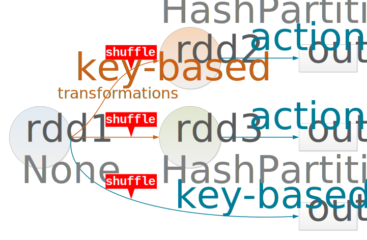

Data analytics is a big and complex field, affecting all areas of our life.
Cassandra Architecture

This is a quick review of what you already know about Cassandra:
- Peer-to-peer architecture
- Failure tolerance/availability
- Cassandra token ring
- Data structures (table)
- Data distribution (partition key)
- Data replication (replication factor)
- Data consistency (consistency level)
DSE Integration of Spark and Cassandra

- Each physical node runs both Cassandra and Spark JVMs to achieve the best data locality
- Spark-Cassandra Connector enables communication between Spark and Cassandra components
- Spark-Cassandra Connector is a library for (primarily) retrieving data from and storying data into Cassandra
WordCount is the New "Hello, World!"

To demonstrate the basic syntax of Spark and its Scala API, lets consider the WordCount problem, which became the new "Hello, World!" in distributed computing. We will tackle this problem in the context of the KillrVideo dataset, whose tag cloud is shown in the slide. To visualize different video genres and their frequencies, we must count how many times each genre is assigned to any given video. Lets begin!
Step 1: Loading Records
Reading video records from a local CSV file
val records = sc.textFile("file:///home/videos.csv")
Step 1 loads video records from a CSV file in the local file system. The textFile method is called on the sc object that is a predefined SparkContext available in Spark shell. SparkContext serves as an entry point to Spark functionality. The resulting records object is an RDD or Resilient Distributed Dataset. For now, lets think of records as a dataset representation in Spark.
As you can see from the illustration, each line in the CSV file becomes an element of type String in the RDD.
Step 2: Parsing Records
Splitting video records into words and dropping video identifiers
val words = records.flatMap(record => record.split(",").drop(1))
To parse the video records, we next apply transformation flatMap on the records RDD to obtain the words RDD. flatMap takes an anonymous function as a parameter. The body of this function is applied to each element of the input RDD records. In particular, each record is split based on the comma delimiter into multiple literals and the first literal representing a video identifier is dropped. All the remaining literals representing video genres become elements in the words RDD.
You may notice that flatMap is a one-to-many mapping, such that one element from the input RDD can result in many elements in the output RDD. flatMap is only one of many transformations defined for Spark RDDs. We will see examples of two other transformations in the next slide.
Step 3: Counting Words
Counting video genres
val counts = words.map(word => (word,1)).reduceByKey{case (x,y) => x + y}
Counting is implemented using two transformations. First, we map each word or genre to a pair consisting of a key and a value. In our example, a key is represented by a genre from the words RDD and value is always hard-coded as 1. The intermediate RDD resulting from the map transformation contains key-value pairs and therefore, frequently called a Key-Value Pair RDD. The second transformation, reduceByKey, is applied on the intermediate RDD to aggregate values of pairs with the same key. In this example, the aggregation function is simply defined as addition of two numeric values.
The illustration shows the effects of these two transformations.
Note that, unlike flatMap, it is easy to see from the illustration that map allows for a one-to-one mapping.
Step 4: Outputing The Result
Collecting and printing the result
counts.collect().foreach(println)
In this last step, we are collecting and printing the result of our computation. We apply collect on the counts RDD to transfer all data from the distributed dataset represented by this RDD to a Scala Array on the client machine. Unlike transformations that take an RDD as input and return an RDD as output, collect is an action; it triggers computation of the final result and makes it available to the client program.
The output array is then processed using regular Scala Array API to print each element to the screen.
RDD as a Dataset
- Collection of data objects
- Object types can affect operations

First, think of RDD as a dataset or a collection of data objects of a known type. Types of objects can affect operations that are applicable to a particular RDD. For example, the RDD in the illustration holds key-value pairs, where keys correspond to people names and values correspond to people ages, such as Alice is 21 y.o. Key-Value Pair RDDs constitute a special class of RDDs with many useful and unique operations.
It is important to understand that until computation is triggered by an action, an RDD does not hold any data; it is instead just a recipe of how data objects can be computed.
RDD as a Distributed Dataset
- RDD is divided into partitions
- Partitions are distributed across nodes in a cluster

Second, Spark automatically partitions an RDD into smaller collections called partitions and distributes them among Executors on different nodes in a cluster.
In our example, we have four partitions distributed across the three nodes.
How partitioning is performed may depend on many factors, including a data source, such as Cassandra or HDFS, number of cores available to an application, and types of operations applied to an RDD. An application will frequently have to control partitioning to achieve optimal performance.
RDD as a Resilient Distributed Dataset
- Spark remembers lineage of all data it computes to achieve fault-tolerance
- Spark automatically recomputes partitions that were lost due to a failure

Third, RDD is resilient or fault-tolerant because Spark remembers lineage or pedigree of all data it computes. In case of a node or process failure, lost partitions are recomputed automatically.
This process is illustrated in our example, where the node with two partitions failed and Spark recomputed those partitions on the two other nodes. Reliability of an external data source is important for result reproducibility. Spark should be able to retrieve data again if need be!
RDD is Immutable
- RDD is read-only
- RDD can be transformed

Next, the RDD property that is frequently overlooked is immutability.
It is helpful to think about RDD data as read-only. To change data, we must transform an RDD into a new RDD.
In this example, we are applying the filer transformation on the input RDD to produce the output RDD with key-value pairs where value (person’s age) is greater or equal to 21.
RDD is for In-Memory Computation
- RDD partitions are processed in memory
- RDD (as a whole) does not have to fit into memory

Finally, Spark is about parallel, in-memory computation. Partitions do have to be in memory to be processed, however an RDD as a whole does not need to be in memory at one given moment.
Conceptually, imagine that computation is organized into multiple pipelines with a known throughput, such that each pipeline can handle some number of partitions at a time. The data that is waiting for its turn to get into a pipeline is simply sitting at the data source. Once a pipeline is cleared and its output is to an external system, it is capable to serve more partitions. The more cluster resources are allocated to your application, the more pipelines and parallelism you can have.
It should be noted that some operations on RDDs, such as those that involve data shuffling, require disk I/O. In addition, an application will frequently have to control how an RDD is cached or persisted to achieve optimal performance.
Transformation Examples
Demonstrating filter, map, flatMap, distinct, and cartesian
Starting with an RDD of movies
val movies = sc.parallelize( Array("Frozen, 2013", "Toy Story, 1995", "WALL-E, 2008", "Despicable Me, 2010", "Shrek, 2001", "The Lego Movie, 2014", "Alice in Wonderland, 2010") )
We are going to demonstrate some of the discussed transformations in the following examples. Let us start by creating the movies RDD with 7 elements, where each element is a string literal containing a movie title and a movie release year.
filter
Find movies from 2010
val movies2010 = movies.filter(m => m.substring(m.length-4,m.length).toInt == 2010)
// alternatively, the same result can be computed with this statement
val movies2010 = movies.filter(m => m.split(",").last.trim.toInt == 2010)
Our first challenge is to find movies from 2010.
Here we are using the filter transformation to select only those movies whose release years are equal to 2010. A minor difficulty is that we first need to extract a year from a string literal. There are a couple of alternatives shown. First, we can use method substring to extract the last 4 characters in a literal and convert the result to an integer. Second, we can use method split to decompose a literal based on the comma delimiter, take the last component, trim leading spaces, and convert the result to Int. In both cases, the result is exactly the same - two movies are selected for the new RDD.
map
Add a set of genres to each movie
val familyMovies = movies2010.map(m => (m, Set("Family","Animation")))
Next, we are going to add a predefined set of genres ("Family" and "Animation") to each movie from 2010.
map takes each input RDD element of type String and returns a tuple with two components of type String and Set for the new familyMovies RDD. This is a one-to-one mapping.
flatMap and distinct
Extract distinct genres
val familyGenres = familyMovies.flatMap{case (m,g) => g }
.distinct
This time, we want to extract distinct genres from the previous RDD.
Because the genres are stored in the Set collection, we are using flatMap to get down to individual elements in a set and map them to elements of the intermediate RDD. This is a one-to-many mapping. We are then eliminating duplicates with the distinct transformation that gives us RDD familyGenres.
cartesian and filter
Compute all possible pairs of non-repeating genres
val pairs = familyGenres.cartesian(familyGenres)
.filter{case (g1,g2) => g1 != g2}
In our final example, we are computing all possible pairs of non-repeating genres using transformations cartesian and filter.
Computing a Cartesian product can produce a large result, yet it is a useful transformation in real life applications. For example, to find similar items in a set, you may have to compare every item with every other item in this set. This is where cartesian helps you generate all possible item pairs to do the comparison.
Our filter transformation eliminates pairs where both genres are the same.
Go ahead and try other transformations we discussed!
Action Examples
Demonstrating collect, count, reduce, and foreach
Starting with an RDD of movies
val movies = sc.parallelize( Array("Frozen, 2013", "Toy Story, 1995", "WALL-E, 2008", "Despicable Me, 2010", "Shrek, 2001", "The Lego Movie, 2014", "Alice in Wonderland, 2010") )
We are going to demonstrate some of the discussed actions in the following examples. Let us start by creating the movies RDD with 7 elements, where each element is a string literal containing a movie title and a movie release year.
Cassandra as a Data Source for Spark
Example Cassandra table from the KillrVideo domain

CREATE TABLE movies_by_actor (
actor TEXT,
release_year INT,
movie_id UUID,
title TEXT,
genres SET<TEXT>,
rating FLOAT,
PRIMARY KEY ((actor), release_year, movie_id)
) WITH CLUSTERING ORDER BY (release_year DESC, movie_id ASC);We present how to use Cassandra as a data source for Spark in the context of our KillrVideo database. Here is table movies_by_actor with partition key actor and clustering columns release_year and movie_id. Each partition in this table may store many rows representing all movies with a particular actor, such as Johnny Depp. There is a specific clustering order defined for this table.
Retrieving Data from a Cassandra Table
Example Cassandra table from the KillrVideo domain

val movies = sc.cassandraTable("killr_video","movies_by_actor")
.where("actor = 'Johnny Depp'")
// movies: com.datastax.spark.connector.rdd.CassandraTableScanRDD[
// com.datastax.spark.connector.CassandraRow]We present how to access data retrieved from a Cassandra table in the context of our KillrVideo database. Here is table movies_by_actor with partition key actor and clustering columns release_year and movie_id. To begin with, we create Cassandra RDD movies by retrieving data from table movies_by_actor. In particular, we retrieve all rows from a single partition with partition key "Johnny Depp". Notice that our resulting RDD contains objects of type CassandraRow.
Retrieving an RDD of Cassandra Rows
Example Cassandra table from the KillrVideo domain

val movies = sc.cassandraTable("killr_video","movies_by_actor")
.where("actor = 'Johnny Depp'")
.select("release_year","title","rating")
// movies: com.datastax.spark.connector.rdd.CassandraTableScanRDD[
// com.datastax.spark.connector.CassandraRow]In many cases, you will retrieve data from a Cassandra table as an RDD of CassandraRow objects. Like in this example, we are retrieving data from table movies_by_actor with partition key actor and clustering columns release_year and movie_id. The movies RDD contains CassandraRow objects that correspond to rows in this table. Each resulting Cassandra row has columns "release_year", "title", and "rating" that describe a movie featuring "Johnny Depp".
Saving an RDD into a Cassandra Table
Common scenarios and an example Cassandra table

- Saving an RDD with CassandraRow objects
- Saving an RDD with case class objects
- Saving an RDD with tuples
A you remember, Spark is not a data storage system. Spark gets its datasets from an external system in the form of RDDs, process and analyses them, and pushes results back to the same or possibly different external system. Therefore, knowing how an RDD can be saved into a Cassandra table is very important.
We will cover the three common scenarios of saving an RDD with CassandraRow objects, user-defined case class objects, and tuples, respectively. We will use table favorite_movies from the KillrVidoe domain for our examples. Note that this table has the primary key consisting of two partition key columns title and release_year. The table has three columns of primitive data types (TEXT, INT, and FLOAT), one collection column genres of type SET, and one UDT column details that stores three primitive values for country, language, and movie runtime in minutes.
Example
Not using broadcast variables

val popularTitles = Set("Alice in Wonderland",
"Alice Through the Looking Glass", "...")
val movies = sc.cassandraTable("killr_video","movies")
.select("title","release_year","rating","genres")
.cache
movies.filter(row => popularTitles contains row.getString("title"))
.saveToCassandra("killr_video", "favorite_movies",
SomeColumns("title","release_year","rating","genres"))
movies.filter(row => !(popularTitles contains row.getString("title")))
.saveToCassandra("killr_video", "other_movies",
SomeColumns("title","release_year","rating","genres"))To demonstrate when and how to use broadcast variables, let us explore this example first. We are not using broadcast variables yet.
Here, we have a regular application variable popularTitles (technically, it is a value) that holds a set of movie titles. We also retrieve data from Cassandra table movies into RDD movies and cache this RDD because it is used with multiple actions. The next statement filters RDD movies and saves only those Cassandra rows into table favorite_movies that have popular titles. The last statement filters RDD movies and saves only those Cassandra rows into table other_movies that do not have popular titles.
The computation logic is quite simple and this code runs with no errors. However, notice that popularTitles is used in two filter transformations and therefore, its value will be copied to two respective tasks on each node executing these transformations. If popularTitles is a large dataset, this is when we should consider using a broadcast variable to hold popular titles to optimize our code.
Using broadcast variables
val popularTitles = sc.broadcast(Set("Alice in Wonderland",
"Alice Through the Looking Glass", "..."))
val movies = sc.cassandraTable("killr_video","movies")
.select("title","release_year","rating","genres")
.cache
movies.filter(row => popularTitles.value contains row.getString("title"))
.saveToCassandra("killr_video", "favorite_movies",
SomeColumns("title","release_year","rating","genres"))
movies.filter(row => !(popularTitles.value contains row.getString("title")))
.saveToCassandra("killr_video", "other_movies",
SomeColumns("title","release_year","rating","genres"))This code is now optimized! popularTitle is a broadcast variable whose value is copied and cached on each node only one time. The value of popularTitles is then shared by both filter transformation tasks running on each node.
The Challenge: Suboptimal Code
Computing percentages of comedy movies released in 2014 and 2013

val movies = sc.cassandraTable("killr_video","movies")
.select("release_year","genres")
val movies2014 = movies.filter(row => row.getInt("release_year") == 2014)
val total2014 = movies2014.count
val comedy2014 = movies2014.filter(row => row.getSet[String]("genres")
contains "Comedy").count
val percentage2014 = 100.0 * comedy2014 / total2014
val movies2013 = movies.filter(row => row.getInt("release_year") == 2013)
val total2013 = movies2013.count
val comedy2013 = movies2013.filter(row => row.getSet[String]("genres")
contains "Comedy").count
val percentage2013 = 100.0 * comedy2013 / total2013Study this simple program that serves as our running example in this presentation.
Its goal is to analyze how the percentage of comedy movies from 2014 compares to the percentage of comedy movies from 2013. Did we have more laughter in 2014 or in 2013?
We first retrieve all movies from Cassandra table movies and only keep information about release_year and genres for each movie.
We then apply filter based on release_year == 2014 and count the total number of movies release in 2014. We use another filter to only keep comedy movies from 2014 and we count them.
Given the two counts, total2014 and comedy2014, it is straightforward to compute the percentage of comedy movies from 2014.
We do the same for movies from 2013.
Like we said, this program is simple and it works. However, it is suboptimal as we show in the following slides. The challenge is to optimize this code to run faster!
Final Solution
val movies = sc.cassandraTable("killr_video","movies")
.select("release_year","genres")
.cache
val movies2014 = movies.filter(row => row.getInt("release_year") == 2014)
.cache
val total2014 = movies2014.count
val comedy2014 = movies2014.filter(row => row.getSet[String]("genres")
contains "Comedy").count
val percentage2014 = 100.0 * comedy2014 / total2014
val movies2013 = movies.filter(row => row.getInt("release_year") == 2013)
.cache
val total2013 = movies2013.count
val comedy2013 = movies2013.filter(row => row.getSet[String]("genres")
contains "Comedy").count
val percentage2013 = 100.0 * comedy2013 / total2013Here is our final solution! We only added caching for the three RDDs to make our code run faster.
As a final note, if you execute this code in your application and point your browser to the Spark Application UI at port 4040, you will be able to see the four stages of computation and storage information for persisted RDDs. Have fun!
"Supporting" Transformations for Pair RDDs
| Transformation | Description |
|---|---|
keys() |
A new RDD is formed by keys of the source RDD. |
values() |
A new RDD is formed by values of the source RDD. |
| Both keys() and values() can be easily implemented using map(f). |

pairRDD.keys is equivalent to pairRDD.map{case (k,v) ⇒ k}
pairRDD.values is equivalent to pairRDD.map{case (k,v) ⇒ v}
| Transformation | Description |
|---|---|
mapValues(f) |
A new RDD is formed by applying a function f on each value of the source RDD. Keys are retained without changes, which implies that any key-based partitioning of the source is also retained. There is a one-to-one correspondence between input and output elements. |
flatMapValues(f) |
Same as above except there is a one-to-many correspondence between input and output elements if f returns a Seq with more than one element. |
| It is a bad idea to implement these transformations using map(f). |

It is a bad idea to implement these transformations using map. Here is why.
When applying map(f), Spark assumes that function f changes not only values but also keys (Spark does not analyze your function code). If an input RDD has all pairs with the same key in the same partition, an output RDD is assumed to not retain this property. Therefore, Spark may have to reorganized data into new partitions for subsequent operations — this process is called shuffling and is expensive.
With mapValues and flatMapValues, Spark knows that keys cannot be affected by the transformations.
"Supporting" Actions for Pair RDDs
| Transformation | Description |
|---|---|
lookup(key) |
Returns a Seq of values in the source RDD for a given key. |
collectAsMap() |
Returns a Map of key-value pairs in the source RDD. |
| Only use collectAsMap() when an RDD does not contain multiple pairs with the same key. |

Only use collectAsMap() when an RDD does not contain multiple pairs with the same key. Otherwise, you may "lose" data in the resulting Map, which can only contain unique keys.
Example
Find ratings of movies released in 2014

sc.cassandraTable[(Int,Option[Float])]("killr_video","movies")
.select("release_year","rating")
.mapValues(v => v.getOrElse(0.0))
.lookup(2014)
.foreach(println)
// Sample output:
// 6.3
// 6.0
// 5.4This example should be straightforward!
Notice how we obtained a pair RDD in this example by specifying how data should be retrieved from Cassandra and converted into tuples of the form (Int,Option[Float]).
Transformation reduceByKey
| Transformation | Description |
|---|---|
reduceByKey(f, [numTasks]) |
A new RDD of (K,V) pairs is formed by aggregating values for each key in the source RDD of (K,V) pairs. The reduce function f: V x V → V takes two values of type V and returns a new value of type V. The optional numTasks parameter specifies the number of reduce tasks to use in computation. |

The simplest transformation available. Note that the resulting RDD has the same type as the source RDD.
Count how many movies featuring Johnny Depp were released per year

sc.cassandraTable("killr_video","movies_by_actor")
.where("actor = 'Johnny Depp'")
.select("release_year")
.as( (year:Int) => (year,1) )
.reduceByKey(_ + _)
.collect
.foreach(println)
// Sample output:
// (2010,2)
// (2000,3)
// (2014,3)The first challenge solution.
Transformation foldByKey
| Transformation | Description |
|---|---|
foldByKey(zeroValue, [numTasks])(f) |
A new RDD of (K,V) pairs is formed by aggregating values for each key in the source RDD of (K,V) pairs. The zeroValue parameter is a neutral value, which can be "added" to the result an arbitrary number of times without affecting it (e.g., Nil for list concatenation, 0 for addition, or 1 for multiplication). The associative function f: V x V → V takes a partially aggregated result and a value from the source RDD and returns a new result. The optional numTasks parameter specifies the number of reduce tasks to use in computation. |

This transformation is simpler than it looks like! Conceptually, think about this transformation as if you take one value at a time and "merge" it with a partially aggregated result. The value and the aggregated result must be of the same type.
See transformation aggregateByKey (not covered here) if you need an aggregated result type to be different from an input value type. Alternatively, the next transformation combineByKey in this presentation will do it, too.
Find the highest rated movie featuring Johnny Depp for each year
sc.cassandraTable("killr_video","movies_by_actor")
.where("actor = 'Johnny Depp'")
.select("release_year","title","rating")
.as( (y:Int,t:String,r:Option[Float]) => (y,(t,r)) )
.filter{case (y,(t,r)) => r.isDefined}
.mapValues{case (t,r) => (t,r.get)}
.foldByKey( ("",0.0f) ){ case ((maxT,maxR),(t,r)) =>
if (maxR < r) (t,r)
else (maxT,maxR) }
.collect.foreach(println)
// Sample output:
// (2010,(Alice in Wonderland,6.5))
// (2000,(Before Night Falls,7.3))
// (2014,(Transcendence,6.3))The second challenge solution.
Note that values in the source RDD are pairs themselves, each one consisting of movie title and rating.
zeroValue = ("",0.0f); empty title and zero rating. The foldByKey argument function compares a movie with the currently largest rating and a new movie seen in the dataset, and returns a winning movie. Not much different from finding the largest element in a list.
Transformation combineByKey
| Transformation | Description |
|---|---|
combineByKey( createCombinerF, mergeValueF, mergeCombinersF, [numTasks]) |
A new RDD of (K,C) pairs is formed by aggregating values for each key in the source RDD of (K,V) pairs. Aggregation is guided by three functions:
The optional numTasks parameter specifies the number of reduce tasks to use in computation. |
Most general transformation for per-key aggregation! The aggregate data type C can be different from the value data type V. Very powerful transformation but also a bit more complex.
This transformation can solve all our challenges if we want to.
Compute an average rating of movies featuring Johnny Depp for every year
sc.cassandraTable[(Int,Option[Float])]("killr_video","movies_by_actor")
.where("actor = 'Johnny Depp'").select("release_year","rating")
.filter(_._2.isDefined).mapValues(r => r.get)
.combineByKey(
(rating:Float) =>(rating, 1),
(res:(Float,Int),rating:Float) =>(res._1 + rating, res._2 + 1),
(res1:(Float,Int),res2:(Float,Int))=>(res1._1 + res2._1, res1._2 + res2._2)
)
.mapValues{case (sum,count) => val avg = sum / count; f"$avg%1.1f"}
.collect.foreach(println)
// Sample output:
// (2010,6.3)
// (2000,6.9)
// (2014,5.9)The third challenge solution.
The crux of this example is transformation combineByKey with three anonymous functions passed to it.
The first function: A value represented by rating in the source RDD is mapped to a tuple holding (rating, 1); this combiner holds the current sum of ratings (= rating itself) and a number of ratings (= 1).
The second function: Merges a combiner with a new value to get a new combiner. In our case, we need to add a rating to the sum and +1 to the count.
The third function: Merges two combiners by adding their sums and counts, respectively.
The actual average is computed by the next transformation mapValues.
Action countByKey
| Action | Description |
|---|---|
countByKey([numTasks]) |
Returns a Map of (K,N) pairs, where N is the number of elements for each key in the source RDD of (K,V) pairs. |

As simple as it gets.
Count how many movies featuring Johnny Depp were released per year
sc.cassandraTable("killr_video","movies_by_actor")
.where("actor = 'Johnny Depp'")
.select("release_year")
.as( (year:Int) => (year,1) )
.countByKey
.foreach(println)
// Sample output:
// (2010,2)
// (2000,3)
// (2014,3)Another way to solve the first challenge.
Transformation groupByKey
| Transformation | Description |
|---|---|
groupByKey([numTasks]) |
A new RDD of (K,Iterable<V>) pairs is formed by grouping values for each key in the source RDD of (K,V) pairs. The optional numTasks parameter specifies the number of reduce tasks to use in computation. |

Output movies featuring Johnny Depp grouped by genre

sc.cassandraTable[(String,Int,Set[String])]("killr_video","movies_by_actor")
.where("actor = 'Johnny Depp'")
.select("title","release_year","genres")
.flatMap{case (t,y,gs) => gs.map( g =>(g, t + ", " + y) )}
.groupByKey()
.collect
.foreach(println)
// Sample output for one group:
// (Family,CompactBuffer(
// Alice Through the Looking Glass, 2016,
// Alice in Wonderland, 2010,
// Charlie and the Chocolate Factory, 2005,
// Finding Neverland, 2004))The first challenge solution.
Note that we use the flatMap transformation to generate key-value pairs this time. Inside flatMap, map is not a Spark transformation but rather a method in the Scala Set API.
Transformations cogroup and groupWith
| Transformation | Description |
|---|---|
cogroup(otherRDD, [numTasks]) or groupWith(otherRDD, [numTasks]) |
A new RDD of (K,(Iterable<V>, Iterable<W>)) pairs is formed by grouping values for each key from the source RDD of (K,V) pairs and the otherRDD of (K,W) pairs. The optional numTasks parameter specifies the number of reduce tasks to use in computation. Both cogroup and groupWith refer to the same transformation. |

Output movies with Johnny Depp and movies with Tom Hanks co-grouped by year
val johnnyMovies = sc.cassandraTable("killr_video","movies_by_actor")
.where("actor = 'Johnny Depp'")
.keyBy(row => row.getInt("release_year"))
val tomMovies = sc.cassandraTable("killr_video","movies_by_actor")
.where("actor = 'Tom Hanks'")
.keyBy(row => row.getInt("release_year"))
johnnyMovies.cogroup(tomMovies)
.collect.foreach(println)
// Sample output for one group:
// (2010,CompactBuffer(
// CassandraRow{actor: Johnny Depp, ..., title: The Tourist},
// CassandraRow{actor: Johnny Depp, ..., title: Alice in Wonderland})
// CompactBuffer(
// CassandraRow{actor: Tom Hanks, ..., title: Toy Story 3}))The second challenge solution.
Transformation sortByKey
| Transformation | Description |
|---|---|
sortByKey( [ascending], [numTasks]) |
A new RDD of (K,V) pairs is formed by sorting pairs in the source RDD of (K,V) pairs based on keys in ascending (default) or descending order. The K type must implement trait Ordered. The optional ascending parameter has the default value of true. The optional numTasks parameter specifies the number of reduce tasks to use in computation. |

Output movies from 2010s featuring Johnny Depp ordered by rating
sc.cassandraTable("killr_video","movies_by_actor")
.where("actor = 'Johnny Depp' AND release_year > 2010")
.select("title","release_year","rating")
.as( (t:String, y:Int, r:Option[Float]) => (r.getOrElse(0.0f),(t,y)) )
.sortByKey(false)
.collect
.foreach(println)
// Sample output:
// (7.3,(Rango,2011))
// (6.7,(Pirates of the Caribbean: On Stranger Tides,2011))
// (6.5,(The Lone Ranger,2013))
// (6.3,(Transcendence,2014))The third challenge solution.
Transformation join
| Transformation | Description |
|---|---|
join(otherRDD,[numTasks]) |
A new RDD of (K,(V, W)) pairs is formed by combining all possible values for each key from the source RDD of (K,V) pairs and the otherRDD of (K,W) pairs. The optional numTasks parameter specifies the number of reduce tasks to use in computation. |

This is a classic inner join.
Transformation leftOuterJoin
| Transformation | Description |
|---|---|
leftOuterJoin(otherRDD,[numTasks]) |
A new RDD of (K,(V, Option[W])) pairs is formed by combining values for each key from the source RDD of (K,V) pairs and the otherRDD of (K,W) pairs as:
The optional numTasks parameter specifies the number of reduce tasks to use in computation. |

Useful to, for example, generate a report about users and their uploaded movies when the report should also contain users who never uploaded any movie.
Transformation rightOuterJoin
| Transformation | Description |
|---|---|
rightOuterJoin(otherRDD,[numTasks]) |
A new RDD of (K,(Option[V],W)) pairs is formed by combining values for each key from the source RDD of (K,V) pairs and the otherRDD of (K,W) pairs as:
The optional numTasks parameter specifies the number of reduce tasks to use in computation. |

Similar to the left outer join but the direction is now switched.
Transformation fullOuterJoin
| Transformation | Description |
|---|---|
fullOuterJoin(otherRDD,[numTasks]) |
A new RDD of (K,(Option[V],Option[W])) pairs is formed by combining values for each key from the source RDD of (K,V) pairs and the otherRDD of (K,W) pairs as:
The optional numTasks parameter specifies the number of reduce tasks to use in computation. |

The outer join is the most expensive join as it returns the largest result set.
Challenge 1: Schema Evolution
Step 1: Adding two new columns to playlists_by_user
ALTER TABLE playlists_by_user ADD genres SET<TEXT>;
ALTER TABLE playlists_by_user ADD rating FLOAT;
Schema evolution is common when application or query requirements change. To avoid joins between tables when processing user requests, you should rather add all necessary information into one table.
In Step 1, we are adding two columns to the table definition, which will update table metadata. Data is unchanged and null values will be returned for the new columns in every row.
Step 2: Adding information about movie genres and ratings

val playlists =
sc.cassandraTable("killr_video","playlists_by_user")
.select("user_id","playlist_name","release_year","title","movie_id")
.as((u:java.util.UUID,p:String,y:Int,t:String,m:java.util.UUID) =>
(m,(u,p,y,t)))
val movies =
sc.cassandraTable("killr_video","movies")
.select("movie_id","genres","rating")
.as((m:java.util.UUID,g:Set[String],r:Option[Float]) =>
(m,(g,r)))
playlists.join(movies)
.map{case (m,((u,p,y,t),(g,r))) => (u,p,y,t,m,g,r)}
.saveToCassandra("killr_video","playlists_by_user")Step 2 takes care of inserting values for the new columns in table playlists_by_user by retrieving them from table movies. The join is performed to match rows with the same movies from both tables.
Challenge 2: Data Validation
Do playlists reference non-existing movies?

val playlists =
sc.cassandraTable("killr_video","playlists_by_user")
.keyBy(row => row.getUUID("movie_id"))
val movies =
sc.cassandraTable("killr_video","movies")
.select("movie_id")
.keyBy(row => row.getUUID("movie_id"))
playlists.leftOuterJoin(movies)
.filter{case (m,(rowP,rowM)) => !rowM.isDefined}
.map{case (m,(rowP,rowM)) => rowP}
.collect.foreach(println)
// Sample output:
// CassandraRow{user_id: 709e42f0-5f25-4551-9d85-6e3ad39d6cde,
// playlist_name: Pirate Movies,
// release_year: 2017,
// title: Pirates of DataStax, ...}Periodic data validation is important in Cassandra. For example, data may be duplicated in multiple tables and we want to make sure that all copies are the same. Or a column in one table may reference a key in another table and we want to make sure that we always reference an existing value (aka referential integrity constraint).
In this example, we are validating that any movie in table playlists_by_user is also present in table movies. We are finding violations by using a left outer join and outputing those Cassandra rows from playlists_by_user that do not have a matching movie in table movies (such as movie "Pirates of DatStax"!).
Note that this is not the only possible solution for this challenge. Another, potentially more efficient approach would be computing a set-difference between two sets of movies. This is something we will explore in another presentation that covers transformation subtractByKey.
Union, Intersection, and Difference
| Operation | Venn Diagram | Generic RDD API | Key-Value Pair RDD API |
|---|---|---|---|
Union |

|
|
|
Intersection |

|
|
|
Difference |

|
|
|
Spark set operations, unlike the mathematical set operations, do not always eliminate duplicates in the result. Duplicate elimination can be done with transformation distinct().
Key-Based Union
Sample implementation for union-compatible Pair RDDs
val A = sc.parallelize(Array(("k1","v1"), ("k2","v2"), ("k1","v3"), ("k3","v4")))
val B = sc.parallelize(Array(("k1","w1"), ("k2","w2"), ("k2","w3"), ("k4","w4")))
A.union(B)
A key-based union can be readily implemented using transformation union for generic RDDs.
Notice the union-campatibility requirement. This means that both Pair RDDs must have key-value pairs of the same form and type, such as (K,V).
Duplicates are allowed.
Key-Based Intersection
Sample implementation for union-compatible Pair RDDs
val A = sc.parallelize(Array(("k1","v1"), ("k2","v2"), ("k1","v3"), ("k3","v4")))
val B = sc.parallelize(Array(("k1","w1"), ("k2","w2"), ("k2","w3"), ("k4","w4")))
A.groupByKey
.join(B.groupByKey)
.flatMapValues{case (aList,bList) => aList ++ bList}
A key-based intersection implementation is a bit more involved. groupByKey prepares data for joining, such that each resulting RDD can only have one pair with any given key. This ensures that the join result also has only one pair with any given key. flatMapValues concatenates lists of values from both A and B for each key and generates key-value pairs in the format of input datasets.
Notice the union-campatibility requirement. This means that both Pair RDDs must have key-value pairs of the same form and type, such as (K,V).
Duplicates are allowed.
Key-Based Difference
| Transformation | Description |
|---|---|
subtractByKey(otherRDD,[numTasks]) |
A new RDD of (K,V) pairs is formed by those pairs from the source RDD of (K,V) pairs whose keys are not present in the otherRDD of (K,W) pairs. The optional numTasks parameter specifies the number of reduce tasks to use in computation. |

Input RDDs must have keys of the same type (e.g., K) but values may be of different types (e.g., V and W)
Duplicates are allowed.
Challenge: Data Validation
Do playlists reference non-existing movies?

val playlists =
sc.cassandraTable("killr_video","playlists_by_user")
.keyBy(row => row.getUUID("movie_id"))
val movies =
sc.cassandraTable("killr_video","movies")
.select("movie_id")
.keyBy(row => row.getUUID("movie_id"))
playlists.subtractByKey(movies)
.collect.foreach(println)
// Sample output:
// CassandraRow{user_id: 709e42f0-5f25-4551-9d85-6e3ad39d6cde,
// playlist_name: Pirate Movies,
// release_year: 2017,
// title: Pirates of DataStax, ...}Periodic data validation is important in Cassandra. For example, data may be duplicated in multiple tables and we want to make sure that all copies are the same. Or a column in one table may reference a key in another table and we want to make sure that we always reference an existing value (aka referential integrity constraint).
In this example, we are validating that any movie in table playlists_by_user is also present in table movies. We are finding violations by computing a difference and outputing those Cassandra rows from playlists_by_user that do not have a matching movie in table movies (such as movie "Pirates of DatStax"!).
Note that you might have seen this challenge before. It was previously solved using leftOuterJoin. The current solution uses subtractByKey, which should result in a better performance.
An RDD is a Distributed Collection of Partitions
- Spark automatically partitions RDDs
- Spark automatically distributes partitions among nodes

In this presentation, we will overview basics of Spark partitioning. Some details will be omitted here for brevity but will be covered in subsequent presentations when the time is right.
Partitioning and Computation
- Partition is the smallest unit of data
- Task is the smallest unit of computation
- Number of partitions = Number of tasks
It is important to understand the relationship between partitioning and computation. A separate task is scheduled to perform computation on a partition. Therefore, in the context of one operation, the number of tasks would be equivalent to the number of partitions.

Setting and Reusing a Partitioner
Sample optimization scenario
| Suboptimal case | Optimal case |
|---|---|

|

|
Here is a sample optimization scenario that demonstrates how to avoid re-shuffling the same RDD. We use DAGs of operations to illustrate the concepts.
In the suboptimal case, we perform two key-based transformations on rdd1 with no partitioner to derive rdd2 and rdd3 and one key-based action. Let us assume all the three operations require a HashPartitioner. There are two more actions on rdd2 and rdd3, which may or may not be key-based. Given the lazy evaluation used in Spark and the three actions, we will have to perform shuffling of rdd1 three times (even if rdd1 is cached in-memory) to satisfy key-based partitioning requirements. That is not efficient.
In the optimal case, we first explicitly pre-partition and cache rdd1 using special transformations and HashPartitioner into rdd1'. This enables the key-based transformations and action to reuse the rdd1' partitioner rather then shuffle. As a result, Spark can avoid two extra shuffling operations.
As you may have noticed, use cases for the setting a partitioner and caching optimizations have some common ground. With respect to a DAG of operations, any RDD that has multiple descendants is a good candidate for caching. It is also a good candidate for explicitly setting a key-based partitioner if its descendants can reuse the partitioner. Therefore, setting a partitioner is always followed by caching.
Challenge
Suboptimal code

val movies = sc.cassandraTable("killr_video","movies")
.keyBy(row => row.getInt("release_year"))
.repartition(2*sc.defaultParallelism)
val movieCountByYear = movies.countByKey.foreach(println)
val moviesByYear = movies.groupByKey.collect.foreach(println)Shuffling is done three times in this example.
Challenge Solution
Optimized code
val movies = sc.cassandraTable("killr_video","movies")
.keyBy(row => row.getInt("release_year"))
.partitionBy(
new org.apache.spark.HashPartitioner(2*sc.defaultParallelism))
.cache
val movieCountByYear = movies.countByKey.foreach(println)
val moviesByYear = movies.groupByKey.collect.foreach(println)Shuffling is only done once in this example.
The Challenge: Suboptimal Code
Counting movies with Johnny Depp that were released before 2015

sc.cassandraTable("killr_video","movies_by_actor")
.where("actor = 'Johnny Depp' AND release_year < 2015")
.count
// Sample output: 49Counting rows in a Cassandra table is quite simple but there is one important trick you should know about.
This code is suboptimal: it retrieves data from Cassandra into Spark and calls Spark’s count action. We get the correct result but we should be able to solve this problem in a more efficient manner using Spark-Cassandra Connector API. Let Cassandra do the counting for us.
Our Challenge Solution
Counting movies with Johnny Depp that were released before 2015
sc.cassandraTable("killr_video","movies_by_actor")
.where("actor = 'Johnny Depp' AND release_year < 2015")
.cassandraCount
// Sample output: 49This solution is better: Cassandra does row counting instead of retrieving rows and handing them to Spark for counting. The difference will be quite noticeable when counting a large number of rows.
However …
cassandraCount is inapplicable
sc.cassandraTable("killr_video","movies_by_actor")
.filter(row => row.getFloat("rating")> 6.0)
.countcount is a better choice
val movies = sc.cassandraTable("killr_video","movies_by_actor")
.select("release_year")
.where("actor = 'Johnny Depp' AND release_year < 2015")
.cache
println(movies.count)
movies.keyBy(row => row.getInt("release_year"))
.countByKey.foreach(println)In the first example, cassandraCount cannot replace count because we are using filter that transforms a Cassandra RDD into a Spark RDD.
We can modify the second example to use cassandraCount but it is likely to make our code less efficient because the second action (countByKey) will require to retrieve rows from Cassandra anyway. In this case, it is better to retrieve and cache data to perform both actions using Spark.
The Challenge: Suboptimal Code
Grouping movies by actor and release year

sc.cassandraTable("killr_video","movies_by_actor")
.select("actor","release_year","title")
.as((a:String, y:Int, t:String) => ((a,y),t))
.groupByKey
.takeSample(false, 100)
.foreach(println)
// Sample output:
// ((Johnny Depp,2010),CompactBuffer(The Tourist, Alice in Wonderland))
// ((Johnny Depp,2014),CompactBuffer(Into the Woods, Transcendence, Tusk))| This code requires expensive shuffling. |
This code is suboptimal: it retrieves data from Cassandra into Spark and calls Spark’s groupByKey to solve the problem. We get the correct result but we should be able to solve this problem in a more efficient manner using Spark-Cassandra Connector API.
Intuitively, Cassandra stores rows in a table in partitions that group rows by a partition key (actor in this example). Furthermore, rows within a partition are also grouped by clustering columns. Instead of asking Spark to do grouping for us, we should ask Cassandra to give us already grouped data. By doing this, we can avoid expensive shuffling!
Our Challenge Solution 1
Grouping movies by actor and release year
sc.cassandraTable("killr_video","movies_by_actor")
.select("actor","release_year","title")
.as((a:String, y:Int, t:String) => ((a,y),t))
.spanByKey
.takeSample(false, 100)
.foreach(println)
// Sample output:
// ((Johnny Depp,2010),ArrayBuffer(The Tourist, Alice in Wonderland))
// ((Johnny Depp,2014),ArrayBuffer(Into the Woods, Transcendence, Tusk))| No shuffling is required! |
This example uses spanByKey.
Our Challenge Solution 2
Grouping movies by actor and release year
sc.cassandraTable[(String,Int,String)]("killr_video","movies_by_actor")
.select("actor","release_year","title")
.spanBy{case (a,y,t) => (a,y)}
.takeSample(false, 100)
.foreach(println)
// Sample output:
// ((Johnny Depp,2010),ArrayBuffer((Johnny Depp,2010,The Tourist),
// (Johnny Depp,2010,Alice in Wonderland)))
// ((Johnny Depp,2014),ArrayBuffer((Johnny Depp,2014,Into the Woods),
// (Johnny Depp,2014,Transcendence), (Johnny Depp,2014,Tusk)))| No shuffling is required! |
This example uses spanBy. The output is a bit more verbose and the computation is more memory intensive than Solution 1.
The Challenge: Suboptimal Code
Joining two Cassandra tables on partition keys

val actors = sc.cassandraTable("killr_video","actors")
.keyBy(row => row.getString("actor"))
val movies = sc.cassandraTable("killr_video","movies_by_actor")
.keyBy(row => row.getString("actor"))
actors.join(movies).takeSample(false, 100).foreach(println)
// Sample output:
// (Johnny Depp,(
// CassandraRow{actor: Johnny Depp, ..., place_of_birth: Owensboro, ...},
// CassandraRow{actor: Johnny Depp, ..., title: Pirates ...}))| This code requires expensive shuffling. |
This code is suboptimal: it retrieves data from two Cassandra tables into Spark and calls Spark’s join to solve the problem. To perform the join, Spark shuffles both RDDs, which is expensive. We get the correct result but we should be able to solve this problem in a more efficient manner using Spark-Cassandra Connector API.
Intuitively, Cassandra stores rows in a table in partitions that group rows by a partition key (actor in both tables). Partitions from both tables with the same partition key reside on the same Cassandra node. Therefore, Cassandra is in a better position to use data locality to perform a join with no shuffling required.
Example

case class ActorYear(actor: String, release_year: Int)
val actors2014 = sc.parallelize(List(ActorYear("Johnny Depp",2014),
ActorYear("Bruce Willis",2014)))
actors2014.joinWithCassandraTable("killr_video","movies_by_actor")
.takeSample(false, 100).foreach(println)
// Sample output:
// (ActorYear(Johnny Depp,2014),CassandraRow{actor: Johnny Depp,
release_year: 2010, ...})
actors2014.joinWithCassandraTable("killr_video","movies_by_actor")
.on(SomeColumns("actor", "release_year"))
.takeSample(false, 100).foreach(println)
// Sample output:
// (ActorYear(Johnny Depp,2014),CassandraRow{actor: Johnny Depp,
release_year: 2014, ...})The first join is on column actor (default join condition). Notice the sample output for the release year of 2010.
The second join is on columns actor and release_year (specified explicitly). Notice the sample output - only 2014 can be in the result.
How Does the Cassandra Join Work?
Cassandra table is used as an index

Pseudocode:
For each element in the source RDD
- Retrieve matching rows from a Cassandra partition with a CQL query
- Compute all possible combinations (Cartesian product) of the element and the rows
This is really a variation of the classic index-based join algorithm.
Our Challenge Solution
Joining two Cassandra tables on partition keys
sc.cassandraTable("killr_video","actors")
.joinWithCassandraTable("killr_video","movies_by_actor")
.takeSample(false, 100).foreach(println)
// Sample output:
// (CassandraRow{actor: Johnny Depp, ..., place_of_birth: Owensboro, ...},
// CassandraRow{actor: Johnny Depp, ..., title: Pirates ...})| No shuffling is required! |
This example uses joinWithCassandraTable to solve our challenge. The difference from the previous example is that the source RDD is a Cassandra RDD. This is a simple optimization that may have a significant performance impact.
The Challenge: Suboptimal Code
Joining an RDD with a Cassandra table on a partition key

case class Actor(actor: String)
val actors = sc.parallelize(List(Actor("Johnny Depp"),Actor("Bruce Willis")))
actors.joinWithCassandraTable("killr_video","movies_by_actor")
.takeSample(false, 100).foreach(println)
// Sample output:
// (Actor(Johnny Depp),
// CassandraRow{actor: Johnny Depp, ...,
// title: Pirates of the Caribbean: On Stranger Tides})This code is suboptimal due to mismatch in the actors RDD partitioning and the movies_by_actor table partitioning. We are not doing shuffling here but table partitions have to be transfered to nodes where actors are located to do the join. This is still expensive. Please see the next slide for an illustration.
We get the correct result but we should be able to solve this problem in a more efficient manner using Spark-Cassandra Connector API. We should be able to repartition the actors RDD to match table partitioning, such that records with the same partition key (from both the RDD and the table) are located on the same node.
RDD and table partitioning
| Suboptimal (current solution) | Optimal (desired solution) |
|---|---|

|

|
Left illustration: data has to be moved among nodes to perform the join.
Right illustration: data for the join is already co-located.
Our Challenge Solution
Joining an RDD with a Cassandra table on a partition key
case class Actor(actor: String)
val actors = sc.parallelize(List(Actor("Johnny Depp"),Actor("Bruce Willis")))
.repartitionByCassandraReplica("killr_video","movies_by_actor")
actors.joinWithCassandraTable("killr_video","movies_by_actor")
.takeSample(false, 100).foreach(println)
// Sample output:
// (Actor(Johnny Depp),
// CassandraRow{actor: Johnny Depp, ...,
// title: Pirates of the Caribbean: On Stranger Tides})The actors RDD is repartitioned using Cassandra’s ReplicaPartitioner before the join is performed. Data locality is the crux of this optimization!
Example: Joining DStream and Cassandra Table
Augmenting a DStream with data stored in Cassandra

To demonstrate a couple of the discussed transformations, let us solve the following problem.
Given an input stream of movie identifiers (UUIDs), we need to count how many times each movie appeared in a 4-second batch and join the result with Cassandra table movies to add movie titles and years to a transformed DStream.
Using countByValue and transform
val ssc = new StreamingContext(conf, Seconds(4))
val stream = ssc.socketTextStream(streamHost, 9999)
.countByValue()
val movies = ssc.cassandraTable("killr_video","movies")
.select("movie_id","title","release_year")
.as( (id:UUID, t:String, y:Int)=>(id.toString(),(t,y)) )
.partitionBy(new HashPartitioner(2*ssc.sparkContext.defaultParallelism))
.cache
stream.transform(rdd => rdd.join(movies).map{case(id,(c,(t,y))) => (id,t,y,c)})
.printCounting is done by transformation countByValue.
RDD movies is pre-partitioned and cached because it is used in many joins with different RDD batches in the DStream.
The join is performed inside of transform.
Finally, output operation print triggers computation and displays results to the screen.
DataFrame Schema
Human-readable output

val df = sqlContext.sql("SELECT * FROM killr_video.movies")
df.printSchema()root
|-- movie_id: uuid (nullable = true)
|-- genres: array (nullable = true)
| |-- element: string (containsNull = true)
|-- rating: float (nullable = true)
|-- release_year: integer (nullable = true)
|-- title: string (nullable = true)Method printSchema prints the schema to the console in a tree format.
Column names and types
val df = sqlContext.sql("SELECT * FROM killr_video.movies")
val schema = df.dtypes
// schema: Array[(String, String)] =
// Array((movie_id,UUIDType),
// (genres,ArrayType(StringType,true)),
// (rating,FloatType),
// (release_year,IntegerType),
// (title,StringType))Method dtypes returns all column names and their data types as an array.
Complete schema definition
val df = sqlContext.sql("SELECT * FROM killr_video.movies")
val schema = df.schema
// schema: org.apache.spark.sql.types.StructType =
// StructType(StructField(movie_id,UUIDType,true),
// StructField(genres,ArrayType(StringType,true),true),
// StructField(rating,FloatType,true),
// StructField(release_year,IntegerType,true),
// StructField(title,StringType,true))Method schema returns the schema of a DataFrame.
DataFrame Rows
Accessing primitive values
val df = sqlContext.sql(" SELECT title, release_year " +
" FROM killr_video.movies " +
" WHERE title = 'Alice in Wonderland'")
// df: org.apache.spark.sql.DataFrame = [title: string, release_year: int]
val row = df.first
// row: org.apache.spark.sql.Row = [Alice in Wonderland,2010]
println(row(0)) // Alice in Wonderland
println(row.isNullAt(1)) // false
println(row.getInt(1)) // 2010Two approaches:
- Using an index of a column in a row
- Using getters like getString(i:Int), getInt(i:Int), getDouble(i:Int), etc.
The second approach is less flexible as not all data types may have getters defined (e.g., collection columns). In addition, only the second approach throws an exception when accessing a null value, so the use of isNullAt may be required.
Accessing complex values
val df = sqlContext.sql(" SELECT genres " +
" FROM killr_video.movies " +
" WHERE title = 'Alice in Wonderland'")
// df: org.apache.spark.sql.DataFrame = [genres: array<string>]
val row = df.first
// row: org.apache.spark.sql.Row = [ArrayBuffer(Adventure, Family, Fantasy)]
row(0).asInstanceOf[Seq[String]].foreach(println)
// Adventure
// Family
// FantasyCollection column genres is used as an example.
Explicit type conversion using asInstanceOf is required.
Example
Counting and displaying Johnny Depp’s movies

val df = sqlContext.sql(" SELECT title, release_year, rating " +
" FROM killr_video.movies_by_actor " +
" WHERE actor = 'Johnny Depp'")
.coalesce(1).cache
println("Total: " + df.count)
df.show(4)
// Total: 54
// +--------------------+------------+------+
// | title|release_year|rating|
// +--------------------+------------+------+
// |Pirates of the Ca...| 2017| null|
// |Alice Through the...| 2016| null|
// | Yoga Hosers| 2015| null|
// | Mortdecai| 2015| 5.5|
// +--------------------+------------+------+We are using coalesce to decrease the number of partitions to 1 because the dataset retrieved from Cassandra is tiny and parallelism will not be of much use.
We are using cache to materialize and store the DataFrame in main memory because two actions, count and show, are used.
Example
STEP 1: Creating a DataFrame from a Cassandra table

val df = sqlContext.read
.format("org.apache.spark.sql.cassandra")
.options(Map( "keyspace" -> "killr_video",
"table" -> "movies_by_actor" ))
.loadCreating a DataFrame using DataFrameReader.
STEP 2: Executing a language-integrated query
import org.apache.spark.sql.functions._
df.filter("actor = 'Johnny Depp'")
.groupBy("release_year")
.agg(Map("*" -> "count", "rating" -> "avg"))
.withColumnRenamed("COUNT(1)", "total_movies")
.withColumnRenamed("AVG(rating)", "average_rating")
.select("release_year", "total_movies", "average_rating")
.orderBy(desc("total_movies"), desc("average_rating"))
.limit(3)
.show
// +------------+------------+-----------------+
// |release_year|total_movies| average_rating|
// +------------+------------+-----------------+
// | 2004| 4|6.850000023841858|
// | 2000| 3|6.933333396911621|
// | 2011| 3|6.733333269755046|
// +------------+------------+-----------------+We are looking for Johnny Depp’s 3 most productive years in terms of the number of released movies and their average ratings.
Of course, we could have solved this problem using SQL, but this is a topic of another presentation.
Running Example
Simple ETL scenario
- Reading from table movies
- Filtering movies by genre "Family"
- Saving into table family_movies

We will learn by example.
Reading from a Cassandra Table
Using DataFrameReader

val movieDF = sqlContext.read
.format("org.apache.spark.sql.cassandra")
.options(Map( "keyspace" -> "killr_video",
"table" -> "movies" ))
.loadCreating a DataFrame using DataFrameReader.
Saving a DataFrame into a Cassandra Table
Using DataFrameWriter

familyDF.write
.format("org.apache.spark.sql.cassandra")
.options(Map( "keyspace" -> "killr_video",
"table" -> "family_movies" ))
.saveMethod write returns a DataFrameWriter that is provided with a specific format and options to save data into a Cassandra table.
Example: Querying a Cassandra Table
Find the largest rating for Johnny Depp’s movie

sqlContext.setKeyspace("killr_video")
val maxDF = sqlContext.sql(
" SELECT actor, MAX(rating) AS max_rating " +
" FROM movies_by_actor " +
" WHERE actor = 'Johnny Depp' " +
" GROUP BY actor " )
maxDF.show
// +-----------+----------+
// | actor|max_rating|
// +-----------+----------+
// |Johnny Depp| 8.6|
// +-----------+----------+Simple query over a single table with grouping and aggregation for demonstration purposes.
Example: Querying a Temporary Table
Find Johnny Depp’s movies with ratings higher than the largest rating - 1
maxDF.registerTempTable("max_rating")
val movieDF = sqlContext.sql(
" SELECT M.actor, title, release_year, rating " +
" FROM max_rating AS R JOIN movies_by_actor AS M " +
" ON (R.actor = M.actor) " +
" WHERE rating > max_rating - 1 " +
" ORDER BY release_year DESC, rating DESC " )
movieDF.show(2)
// +-----------+--------------------+------------+------+
// | actor| title|release_year|rating|
// +-----------+--------------------+------------+------+
// |Johnny Depp| Finding Neverland| 2004| 7.8|
// |Johnny Depp|Pirates of the Ca...| 2003| 8.1|
// +-----------+--------------------+------------+------+The DataFrame is registered as a temporary table and joined with the Cassandra table.
Choosing the Best Table for a Query
One query, two tables
SELECT release_year, title
FROM killr_video.???
WHERE actor = 'Johnny Depp' AND release_year < 2015
ORDER BY release_year DESC
Query: Find release years and titles of Johnny Depp’s movies released before 2015 and show results in descending release year order.
The query is expressed in SQL with the ??? placeholder for a table name.
Both tables can be used to answer the query. Which one will you choose? Pay attention to table partition and clustering keys.
Understanding the Cassandra data and query models is very important!
Clustering Key Predicate can be Pushed
actor = 'Johnny Depp'

SQL query
sqlContext.sql(" SELECT release_year, title " +
" FROM killr_video.actors_by_movie " +
" WHERE actor = 'Johnny Depp' AND release_year < 2015 " +
" ORDER BY release_year DESC").showLanguage-integrated query
import org.apache.spark.sql.functions._
val df = sqlContext.read.format("org.apache.spark.sql.cassandra")
.options(Map( "keyspace" -> "killr_video",
"table" -> "actors_by_movie" )).load
df.filter("actor = 'Johnny Depp' AND release_year < 2015")
.select("release_year", "title")
.orderBy(desc("release_year")).showBoth SQL and language-integrated queries are equivalent. They return equivalent but not necessarily identical results: ordering of rows within the same year group may be different.
This is not the best table choice.
Even though actor = 'Johnny Depp' can be pushed down to Cassandra, the query is still expensive because Cassandra will have to retrieve matching rows from many partitions. Once results are delivered from Cassandra, Spark still has to filter based on release_year < 2015 and perform sorting.
All Predicates can be Pushed
actor = 'Johnny Depp' AND release_year < 2015

SQL query
sqlContext.sql(" SELECT release_year, title " +
" FROM killr_video.movies_by_actor " +
" WHERE actor = 'Johnny Depp' AND release_year < 2015").showLanguage-integrated query
val df = sqlContext.read.format("org.apache.spark.sql.cassandra")
.options(Map( "keyspace" -> "killr_video",
"table" -> "movies_by_actor" )).load
df.filter("actor = 'Johnny Depp' AND release_year < 2015")
.select("release_year", "title").showBetter table choice = faster and simpler query!
Much better performance: the whole WHERE clause can be pushed down to Cassandra; Cassandra will access only one partition very efficiently.
Simpler query: because data in the Cassandra partition for Johnny Depp is already ordered by clustering column release_year, no need to use ORDER BY.